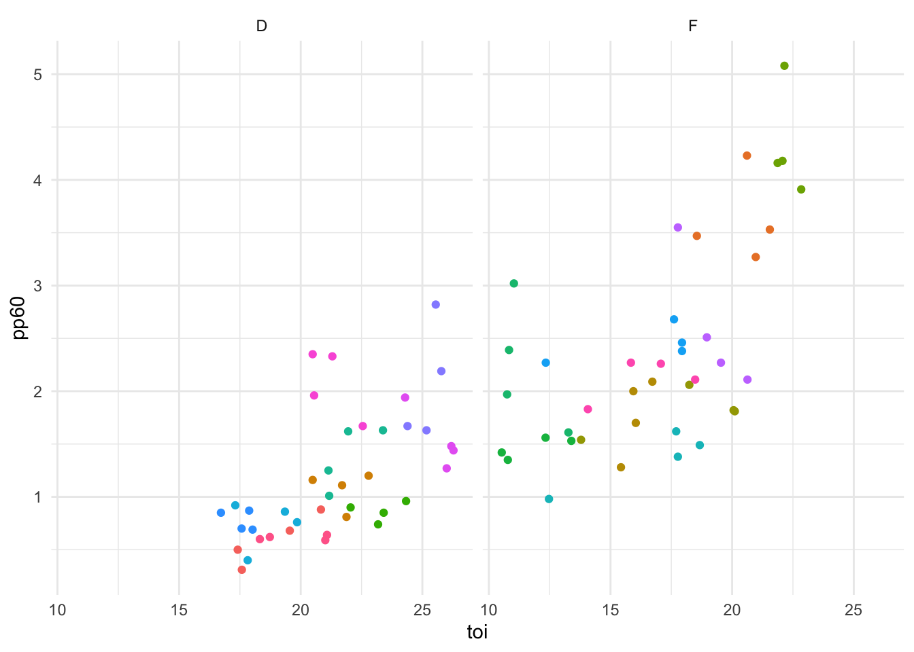

Linear Regression Modeling assumes observations are independent of each other
Longitudinal Data Does Not Meet That Assumption—Good Use of mixed effects models
e.g., Player’s performance this year is not independent of last year’s performance
Mixed effects models contain both fixed and random effects.
Fixed:
Explanatory/Independent Variables Assumed to have effect on response/dependent variable
Random:
Allow to skirt past independence assumption
Categorical variables interested in controlling for, even if not interested in quantifying impacts of or knowing about specific levels, because we know they’re likely influencing patterns that might emerge
Variable often has many possible levels, and likely just a sample of population in data
The following object is masked from 'package:yardstick':
get_weights
In this example, given the repeated observations, I want to allow for the possibility that there is some type of individual player effect that is not measured by my other (independent, fixed) variables. I’m not particularly interested in quantifying the effect of “being Player X” on scoring rate, I just want to address that the effect exists. (In contrast, I am interested in the effect of position and the effect of time on ice, our two fixed variables.)
For example, Connor Brown and Auston Matthews are both forwards who averaged around 20 minutes per game last year. By the two fixed effects included in this very small model, they would produce a very similar response variable. But as anyone who watches hockey can tell you, Auston Matthews is much more offensively talented than Connor Brown, and in this model, the random effect of the player will address some of that. Random effects are useful for capturing the impact of persistent characteristics that might not be observable elsewhere in the explanatory data. In this example, it can be thought of as a proxy for player “talent” in a way.
If those random effects are correlated with variables of interest, leaving them out could lead to biased fixed effects. Including them can help more reliably isolate the influence of the fixed effects of interest and more accurately model a clustered system.
Rows: 80 Columns: 5
── Column specification ────────────────────────────────────────────────────────
Delimiter: ","
chr (2): player, position
dbl (3): season, pp60, toi
ℹ Use `spec()` to retrieve the full column specification for this data.
ℹ Specify the column types or set `show_col_types = FALSE` to quiet this message.
The simplest version of a mixed effects model uses random intercepts. In this case, the random effect allows each group (or player, in this case) to have a different intercept in the model, while the effects of the other variables remain fixed. The code below creates the m1 model with pp60 as the response variable, position and toi as the fixed effects, and (1 | player) as the random effect for the intercept. The | is just a special interaction to make sure that the model has different effects for each level of the grouping factor (in this case, for each player).
m1 <-lmer( pp60 ~ position + toi + (1| player),data = df )summary(m1)
Linear mixed model fit by REML ['lmerMod']
Formula: pp60 ~ position + toi + (1 | player)
Data: df
REML criterion at convergence: 115.9
Scaled residuals:
Min 1Q Median 3Q Max
-2.1327 -0.4468 -0.1237 0.3489 3.0031
Random effects:
Groups Name Variance Std.Dev.
player (Intercept) 0.4126 0.6423
Residual 0.1192 0.3452
Number of obs: 80, groups: player, 20
Fixed effects:
Estimate Std. Error t value
(Intercept) -0.16546 0.58054 -0.285
positionF 1.48931 0.31861 4.674
toi 0.06254 0.02531 2.471
Correlation of Fixed Effects:
(Intr) postnF
positionF -0.573
toi -0.932 0.358
3.0.1 View Individual Random Effects
ranef(m1) |>as.data.frame() |> knitr::kable()
grpvar
term
grp
condval
condsd
player
(Intercept)
Andy Greene
-0.3922248
0.1666845
player
(Intercept)
Auston Matthews
0.9550296
0.1666845
player
(Intercept)
Brett Pesce
-0.1144402
0.1666845
player
(Intercept)
Calle Jarnkrok
-0.5214549
0.1666845
player
(Intercept)
Connor Brown
-0.6018354
0.1666845
player
(Intercept)
Connor McDavid
1.5091598
0.1666845
player
(Intercept)
Esa Lindell
-0.3970716
0.1666845
player
(Intercept)
Garnet Hathaway
-0.5542113
0.1666845
player
(Intercept)
Jason Spezza
0.1923681
0.1666845
player
(Intercept)
Neal Pionk
0.1609786
0.1666845
player
(Intercept)
Nick Foligno
-0.9306865
0.1666845
player
(Intercept)
Nick Jensen
-0.2441537
0.1666845
player
(Intercept)
Oliver Bjorkstrand
0.0879642
0.1666845
player
(Intercept)
Radko Gudas
-0.1441408
0.1666845
player
(Intercept)
Roman Josi
0.6206141
0.1666845
player
(Intercept)
Sam Reinhart
0.0780850
0.1666845
player
(Intercept)
Thomas Chabot
0.0850422
0.1666845
player
(Intercept)
Torey Krug
0.8539466
0.1666845
player
(Intercept)
Yanni Gourde
-0.2144187
0.1666845
player
(Intercept)
Zdeno Chara
-0.4285505
0.1666845
4 Running with Tidymodels
4.0.1 Build Model
lmer_spec <-linear_reg() |>set_engine("lmer")using_tidymodels <- lmer_spec |>fit( pp60 ~ position + toi + (1| player),data = df )using_tidymodels
parsnip model object
Linear mixed model fit by REML ['lmerMod']
Formula: pp60 ~ position + toi + (1 | player)
Data: data
REML criterion at convergence: 115.8825
Random effects:
Groups Name Std.Dev.
player (Intercept) 0.6423
Residual 0.3452
Number of obs: 80, groups: player, 20
Fixed Effects:
(Intercept) positionF toi
-0.16546 1.48931 0.06254
This particular example is focused on longitudinal data, but mixed effects models are useful whenever there’s any kind of clustering effect where the group is likely affecting the outcome. These effects can even be nested (e.g., studying test scores within schools that are within districts). Generally if the data has some sort of nested/hierarchical structure, that’s when you’ll start to see the “multilevel model” terminology, although the principles are the same.
More details on those multilevel models are available at the links below, but the model formulas would be very similar. If you have nested groups, a random effect structured like (1 | v1 / v2) would mean intercepts varying among v1 and v2 within v1.
If it’s not apparently obvious, how can you tell if your data is clustered? You can start by plotting it! The data behind our example is plotted below. Each color in the plot is a different player, and just by a little manual inspection, we can see that the data appears to be clustered.
5.0.1 Viz Showing Clusters
ggplot( df, aes(x = toi, y = pp60,color = player ) ) +geom_point() +facet_grid(~ position) +theme_minimal() +theme(legend.position ="none" )

You can also investigate clustering by creating a simple null model, which only has the intercept and the random effect. The summ function within the jtools package will helpfully provide the ICC, or intraclass correlation coefficient, which can help identify clustering. This data has a value of 0.89, which is quite high and good evidence that a mixed effects model is necessary here.
MODEL INFO:
Observations: 80
Dependent Variable: pp60
Type: Mixed effects linear regression
MODEL FIT:
AIC = 130.78, BIC = 137.93
Pseudo-R² (fixed effects) = 0.00
Pseudo-R² (total) = 0.89
FIXED EFFECTS:
-------------------------------------------------------
Est. S.E. t val. d.f. p
----------------- ------ ------ -------- ------- ------
(Intercept) 1.78 0.22 8.10 19.00 0.00
-------------------------------------------------------
p values calculated using Kenward-Roger standard errors and d.f.
RANDOM EFFECTS:
------------------------------------
Group Parameter Std. Dev.
---------- ------------- -----------
player (Intercept) 0.97
Residual 0.34
------------------------------------
Grouping variables:
--------------------------
Group # groups ICC
-------- ---------- ------
player 20 0.89
--------------------------
6 Varying Slopes
The simple example above used a varying intercept, where each player (our random effect) had an adjustment to the overall intercept. But more complexity can be added to a mixed effects model by also incorporating random slopes, which would allow the effect of the selected variable(s) to vary across subjects.
If, for example, we wanted to incorporate an age variable into our model and we wanted the influence of that variable to vary by player, it would be incorporated like so, before the | player:
m_slope <- lmer(pp60 ~ position + toi + (1 + age | player),
data = df)
Those resulting random effects would be available just like with the intercepts, by using ranef(m_slope).
7 Resources
8 This was intended to be a beginner’s guide to mixed effects modeling with a simple example. For more details, both technical and theoretical, I found all of the following resources helpful: